Fuse Integration Services (FIS) provides a set of tools and containerized xPaaS images for developing, deploying, and managing microservices on OpenShift.
![[Important]](imagesdb/important.png) | Important |
|---|---|
For Fuse FIS projects, JBoss Fuse Tooling requires installation of the Red Hat Developer Container Kit (CDK) v2.3. See Red Hat Developer Container Kit Installation Guide for instructions. In addition to the prerequisites specified in this guide, you need to establish Red Hat account if you do not have one. Your Red Hat user name and password are required to start up the virtual OpenShift instance provided in the Red Hat Container Development Kit. You can easily get an account by registering on the Red Hat Customer Portal. Click in the upper right corner of the white banner, and then click on the Login to Your Red Hat Account page. |
JBoss Fuse Tooling enables you to develop and deploy FIS 2.0 projects using the s2i binary workflow. In this workflow, the tooling builds your project locally, assembles it into an image stream, then pushes the image stream to OpenShift, where it is used to build the Docker container. Once the Docker container is built, OpenShift deploys it in a pod.
| Important |
|---|---|
JBoss Fuse Tooling works only with the S2I binary workflow and only with projects based on the Spring Boot framework. |
![[Note]](imagesdb/note.png) | Note |
|---|---|
Although JBoss Fuse Tooling can deploy FIS projects created using the tooling to remote OpenShift servers, this chapter describes creating and deploying FIS projects to a virtual OpenShift instance, installed locally using the Red Hat Container Development Kit (CDK) v2.3. |
Creating and deploying your first Fuse FIS project involves:
| Note |
|---|---|
You can also run a Fuse FIS project as a Local Camel Context Running routes as a local Camel context, and then connect to it in JMX Navigator, where you can monitor and test the routing context. You can also run the Camel debugger on a Fuse FIS project (Part III, “Debugging Routing Contexts”) to expose and fix any logic errors in the routing context. |
Add the Red Hat Container Development Kit to Servers view:
If necessary, switch to Fuse Integration perspective.
Note If, in this or any other section in this chapter, a view described in a procedure is not open, you can open it by clicking > > > .
In Servers view, click the link No servers are available. Click this link to create a new server... to open the Define a New Server wizard. This link appears only when Servers view contains no server entry.
Otherwise, right-click in the view to open the context menu, and then select > to open the Define a New Server wizard.
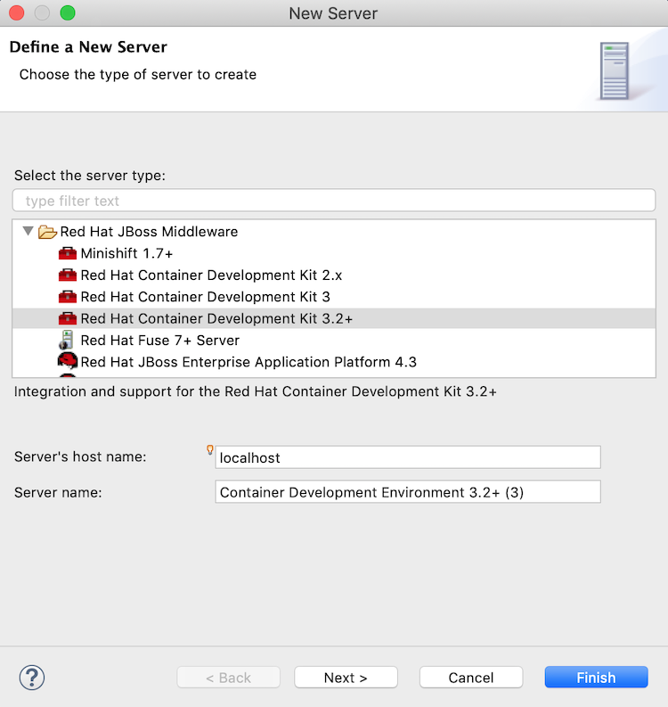Select > .
Accept the defaults for:
Server's host name—
localhostServer name—
Container Development Environment
Click to open the page:
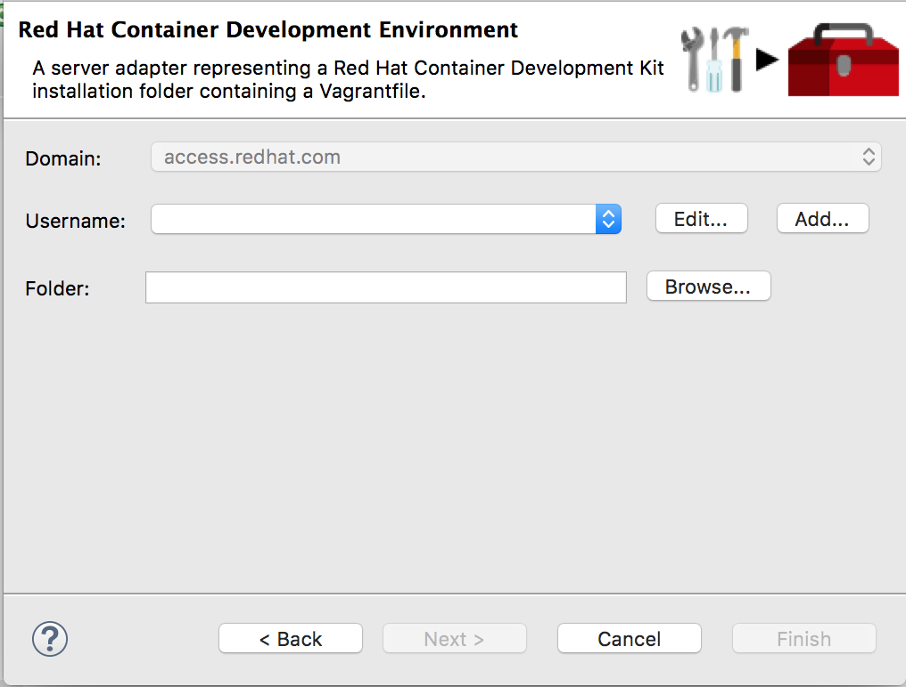Click next to Folder and navigate to the location where you installed the Red Hat Container Development Kit. Drill down to the subdirectory containing the vagrantfile (
CDK_HOME/cdk/components/rhel/rhel-ose/) and click .Click next to Username to open the page:
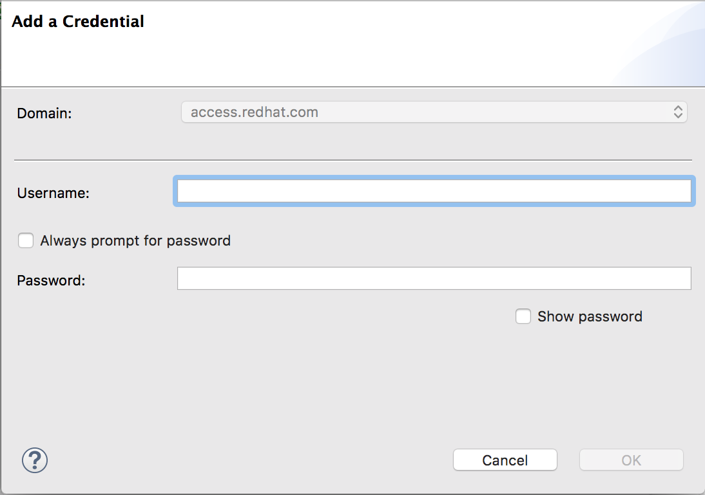Set the credentials this way:
Username—Enter the name you use to log into your Red Hat account.
Always prompt for password—Leave as is (disabled).
Password—Enter the password you use to log into your Red Hat account.
Click to return to the page, which is now populated with the information you supplied. For example:
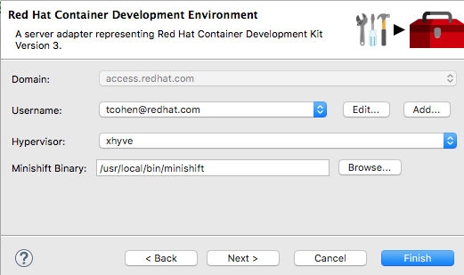Click .
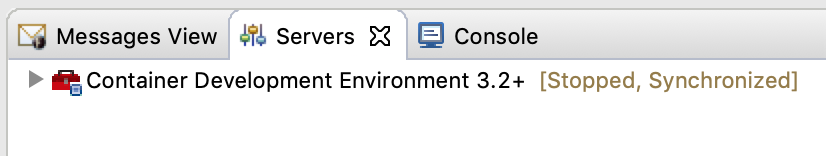Container Development Environment [Stopped, Synchronized] appears in Servers view.
Container Development Environmentis the default Server name specified in Step 2 in Adding the Red Hat Container Development Kit server.
Starting the Container Development Environment (CDE) also starts the virtual OpenShift server. Stopping the CDE also stops the virtual OpenShift server.
In the Servers view, select Container Development Environment [stopped, Synchronized], and then click
 on the Servers menu bar.
on the Servers menu bar.Terminal view opens displaying the status of the startup process:
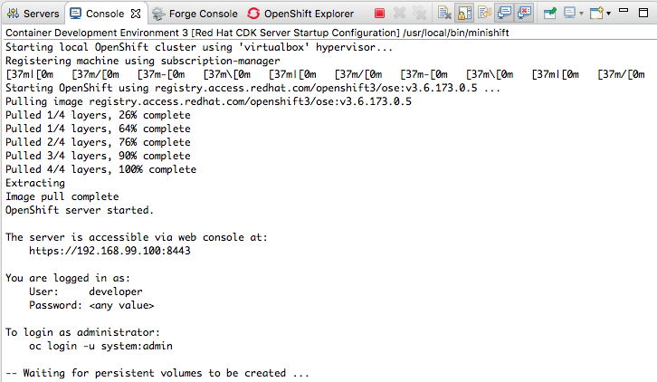Note On initial startup, the CDE asks whether you accept the untrusted SSL certificate:
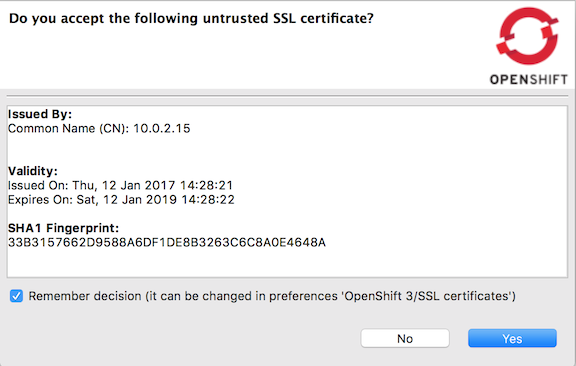Click .
When the startup process has finished, Servers view displays:
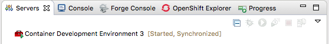Switch to OpenShift Explorer view.
The virtual OpenShift server instance,
openshift-dev, is also running: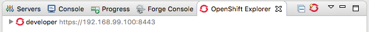https://10.1.2.2:8443is the URL of theopenshift-devweb console. See Accessing the OpenShift Web Console.
When you deploy your Fuse FIS project to OpenShift, it is published to the OpenShift project you create here.
In the OpenShift Explorer view, right-click
openshift-dev https://10.1.2.2:8443to open the context menu.Select > to open the New OpenShift Project wizard:
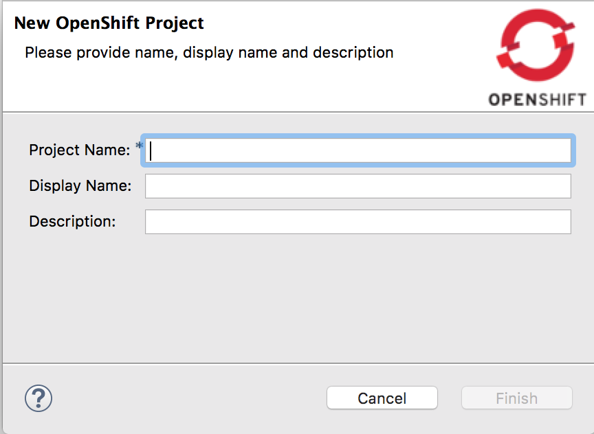Set the new project's properties this way:
In Project Name, enter the name for the project's namespace on the virtual OpenShift server.
Only lower case letters, numbers, and dashes are valid.
In Display Name, enter the name to display on the virtual OpenShift web console's Overview page.
Leave Description as is.
For example:
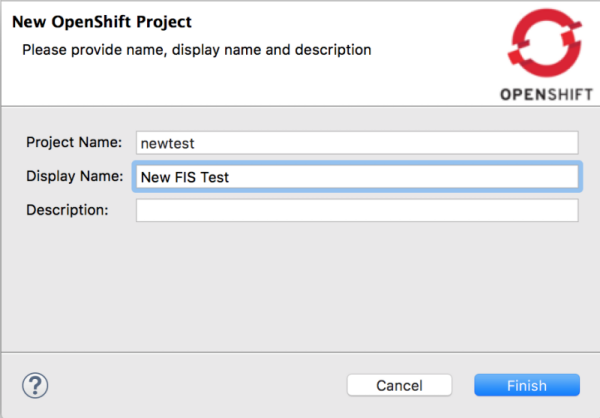Click .
The new OpenShift project (in this example,
New FIS Test newtest) appears in OpenShift Explorer, underopenshift-dev https://10.1.2.2:8443: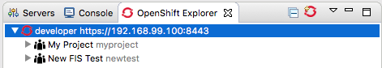Note OpenShift sample project sample-projectis an example project include with OpenShift.With
New FIS Test newtestselected in OpenShift Explorer, Properties view displays the project's details. For example: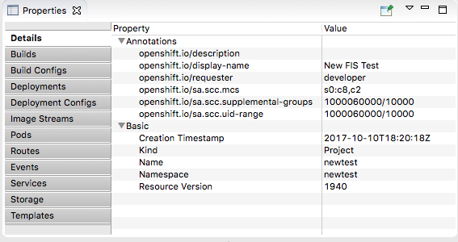Note When you deploy the project to OpenShift, Properties view gathers and displays the same information about the project that the OpenShift web console does.
You create a FIS project using the supplied Spring Boot on OpenShift template.
Right-click in Project Explorer to open the context menu, and then select > to open the wizard's Choose a project name page:

In Project Name, enter a name that is unique to the workspace you are using (for example,
myFISproject.Accept the defaults for the other options.
Click to open the Select a Target Runtime page:

Leave the defaults for Target Runtime (
No Runtime selected) and Camel Version (2.18.1.redhat-000012).Click to open the Advanced Project Setup page:

Click Use a predefined template, and then expand the option:
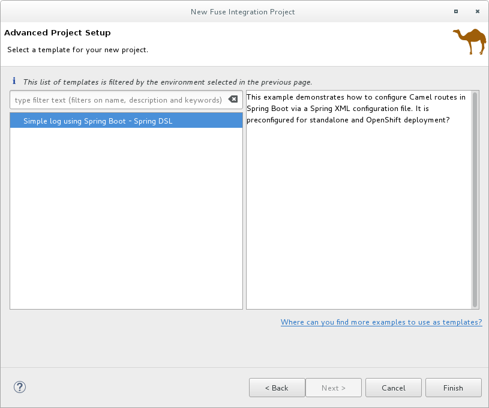Select , and then click .
The tooling displays the status of the build process across the bottom of the Advanced Project Setup page:
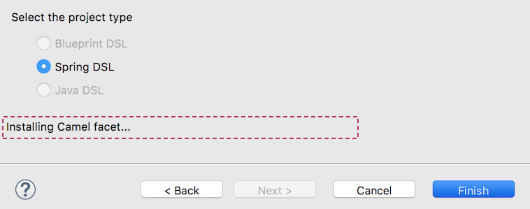Note Because of all the dependencies that are downloaded for a first-time Fuse FIS project, building it can take some time.
Project Explorer displays the project when the build is done:
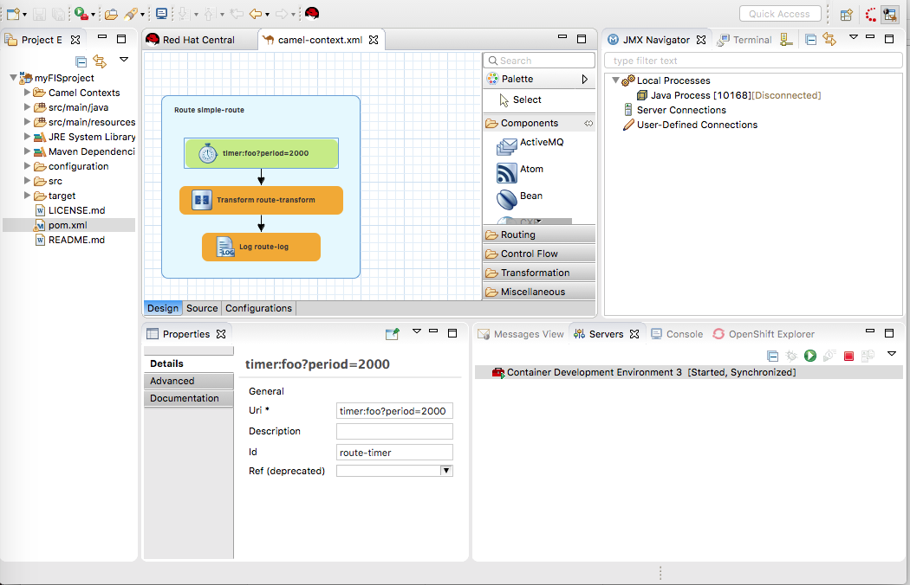
At this point, you can:
Run the project as a to verify that the routing context runs successfully on your local machine
Connecting to the running context in JMX Navigator (see Viewing processes in a local JMX server), you can monitor route components and test whether the route performs as expected:
View a route component's JMX statistics—see Viewing a component's JMX statistics
Edit the running route—see Managing routing endpoints
Suspend/Resume the running route—see Managing routing contexts
Start/Stop tracing on the running route—see Tracing Routes
Run the Camel debugger on the project's
camel-context.xmlfile to discover and fix logic errors—see Part III, “Debugging Routing Contexts”
In Project Explorer, right-click the project's root (in this example,
myFISproject) to open the context menu.Select > to open the Run Configurations wizard.
In the sidebar menu, select > (in this example, Deploy myFISproject on OpenShift) to open the project's default run configuration:
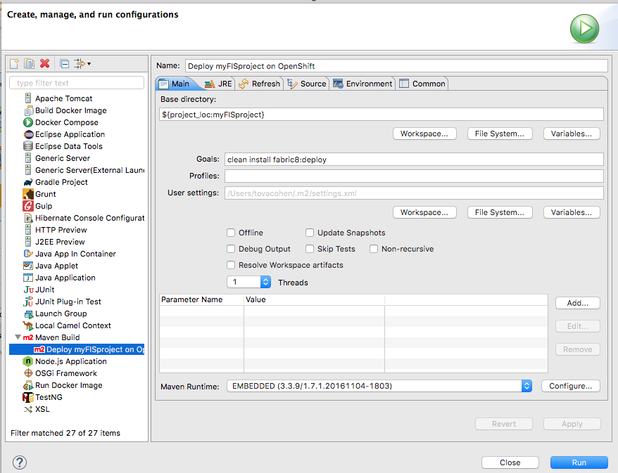Leave all of the default settings on the Main tab.
Open the JRE tab to access the VM arguments:
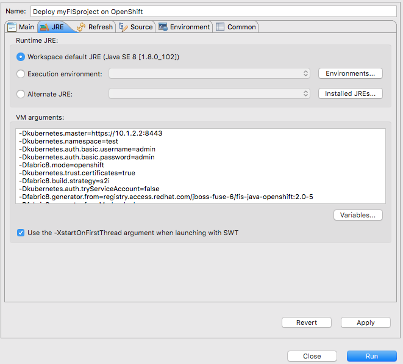In the VM arguments pane, change the value of the
-Dkubernetes.namespace=testargument to match the Project name you used for the OpenShift project when you created it (OpenShift project name in Creating a new OpenShift project.In this example, change the default value
testtonewtest: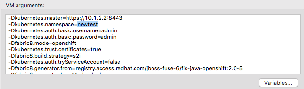Depending on your OpenShift configuration, you may need to modify other VM arguments to support it:
-Dkubernetes.master=https://10.1.2.2:8443When running multiple OpenShift instances or using a remote instance, you need to specify the URL of the OpenShift instance targeted for the deployment.
-Dkubernetes.trust.certificates=trueWhen using the CDK, this argument is required. Leave it set to
true.If you are using an OpenShift instance that has a valid SSL certificate, change the value of this argument to
false.
Click and then click .
Because of the number of dependencies to download, first-time deployment can take some time. The speed of your computer and your internet connection are contributing factors. Typically, it takes 25 to 35 minutes to complete a first-time deployment.
In Console view, you can track the progress of the deploy process. The entry
Pushing image 172.30.205.5:5000/newtest/camel-ose-springboot-xml:latest ...: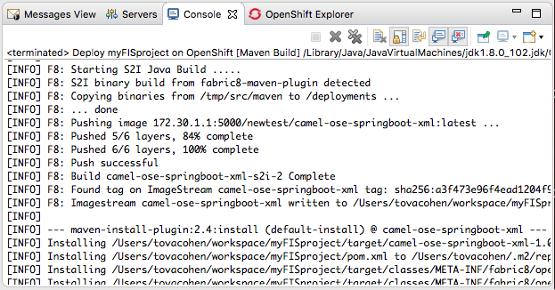indicates the project built successfully, and the application images are being pushed to OpenShift, where they will be used to build the Docker container.
Console view displays
BUILD SUCCESSwhen deployment completes successfully: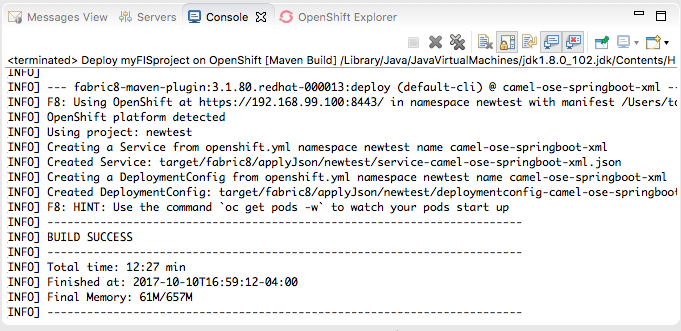Switch to OpenShift Explorer and select
New FIS Test newtest: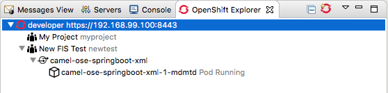In Properties view, the Details page displays all of the project's property values.
Open the other tabs (Builds, Build Configs, Deployments,...) to view other properties of the project. Properties view provides the same information as OpenShift Web Console.
In OpenShift Explorer, select
camel-ose-springboot-xml, and then view its details in Properties view: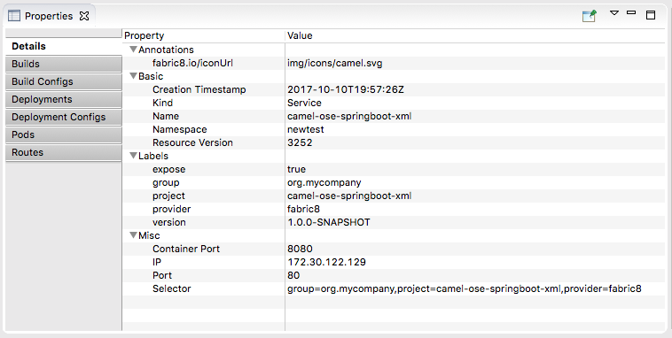Scroll through the other tabs to view other properties of the deployment configuration.
In OpenShift Explorer, select
camel-ose-springboot-xml-1-xqgls Pod Running, and then view the details of the running instance in Properties view: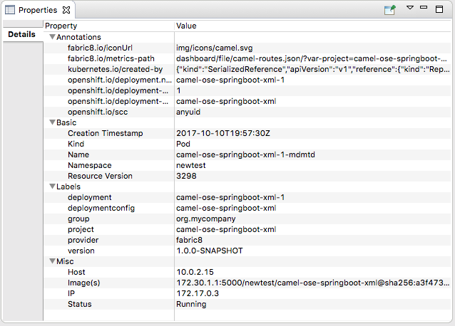In OpenShift Explorer, right-click
camel-ose-springboot-xml-1-xqgls Pod Running, and then select .Note If prompted, enter the path to the installed
ocexecutable. It is required to retrieve pod logs. A typical Vagrant installation puts it in/Users/<username>/.vagrant.d/data/service-manager/bin/openshift/<version>/oc.Console view automatically opens, displaying the logs from the running pod:
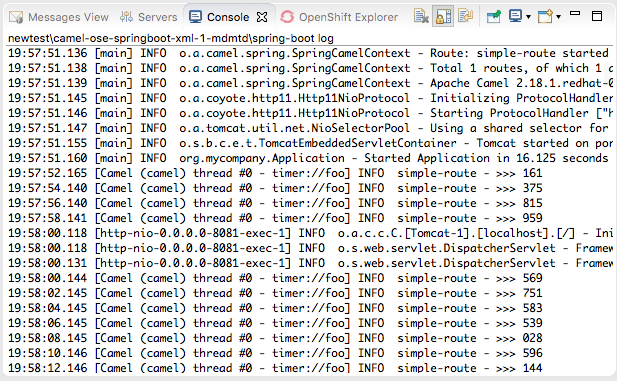Click
 in Console view's menu bar to
terminate the session and clear console output.
in Console view's menu bar to
terminate the session and clear console output.
| Note |
|---|---|
This information applies to Red Hat Container Development Kit installations only. |
To access the OpenShift Web Console, open a browser and enter the OpenShift server's
URL, https://10.1.2.2:8443, into the browser's address field.
You can log into the web console either as a developer or as an administrator, using the default credentials:
Default developer role
The developer user can view only his own projects and the supplied OpenShift sample project, which demonstrates OpenShift v3 features. Developer users can create, edit, delete, and so on any project deployed on OpenShift that they own.
Username
openshift-devPassword
devel
Default administrator role
The Administrator user can view and access all projects on OpenShift (CDK). Administrator users can create, edit, and delete, and so on any project deployed on OpenShift.
Username
adminPassword
admin
For more information on using the OpenShift web console, see https://access.redhat.com/documentation/en/red-hat-container-development-kit/2.3/paged/getting-started-guide/chapter-7-using-openshift-container-platform.